소방설비산업기사(전기) (2013-09-28 기출문제)
1과목: 소방원론
1. 질소를 불연성 가스로 취급하는 주된 이유는?
- 어떠한 물질과도 화합하지 아니하므로
- 산소와 화합하나 흡열반응을 하기 때문에
- 산소와 산화반응을 하므로
- 산소와 같이 공기 성분으로 산소와 화합할 수 없기 때문에
(정답률: 81%)

2. 할로겐화합물 소화약제가 아닌 것은?
- C2F4Br2
- C6H6
- CF3Br
- CF2ClBr
(정답률: 92%)
3. 전기화재를 일으키는 원인으로 볼 수 없는 것은?
- 정전기로 인한 스파크 발생
- 과부하에 의한 발열
- 절연도체 사용
- 배선의 단락
(정답률: 89%)
4. 0℃의 물 1kg을 화염면에 방사하였더니 물의 온도가 80℃가 되었다. 연소열에 의하여 물이 기화되지 않았다면 물이 흡수한 열량은 몇 kcal인가?
- 80
- 100
- 539
- 8000
(정답률: 67%)
5. 위험물안전관리법령상 제2류 위험물인 가연성 고체에 해당하는 것은?
- 칼륨
- 나트륨
- 질산에스테르류
- 마그네슘
(정답률: 73%)
6. 액화천연가스(LNG)의 주성분은?
- CH4
- H2
- C3H8
- C2H2
(정답률: 72%)
7. 건물 내 피난동선의 조건에 대한 설명으로 옳은 것은?
- 피난동선은 그 말단이 길수록 좋다.
- 피난동선의 한쪽은 막다른 통로와 연결되어 화재시 연소가 되지 않도록 하여야한다.
- 2개 이상의 방향으로 피난할 수 있으며 그 말단은 화재로부터 안전한 장소이어야 한다.
- 모든 피난동선은 건물 중심부 한 곳으로 향해야 한다.
(정답률: 92%)
8. 다음 중 정전기의 축적을 방지하기 위한 가장 효과적인 조치는?
- 수분제거
- 저온유지
- 접지공사
- 고압유지
(정답률: 91%)
9. 내화건축물과 비교한 목조건축물의 일반적인 화재 특성을 가장 옳게 나타낸 것은?
- 저온단기형
- 고온단기형
- 저온장기형
- 고온장기형
(정답률: 92%)
10. 다음 중 Halon 1301의 화학식에 포함되지 않는 원소는?
- 탄소
- 염소
- 불소
- 브롬
(정답률: 82%)
11. 자신은 불연성 물질이지만 산소공급원 역할을 하는 물질은?
- 과산화나트륨
- 나트륨
- 트리니트로톨루엔
- 적린
(정답률: 78%)
12. 다음 중 연소할 수 있는 가연물로 볼 수 있는 것은?
- C
- N2
- Ar
- CO2
(정답률: 72%)
13. 메탄 80vol%, 에탄 15vol%, 프로판 5vol% 인 혼합가스의 연소하한은 약 몇 vol%인가? (단, 메탄, 에탄, 프로판의 연소하한은 각각 5.0, 3.0, 2.1vol%이다.)
- 1.3
- 2.3
- 3.3
- 4.3
(정답률: 51%)
14. 다음 중 발화온도가 가장 낮은 물질은?
- 이황화탄소
- 중유
- 휘발유
- 아세톤
(정답률: 62%)
15. 이산화탄소 소화약제의 장점이 아닌 것은?
- 소화 후 약제에 의한 오손이 없다.
- 장기간 저장이 가능하다.
- 겨울에는 동결되어도 가열하여 사용할 수 있다.
- 자체 압력으로 방출이 가능하다.
(정답률: 76%)
16. 제2종 분말소화약제의 주성분은?
- 탄산수소칼륨
- 탄산수소나트륨
- 제1인산암모늄
- 탄산수소칼륨+요소
(정답률: 82%)
17. 다음은 분말소화약제의 열분해반응식이다. ( )에 알맞은 것은?
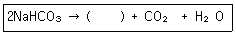
- Na2CO3
- 2NaCO3
- Na2CO2
- 2NaCO2
(정답률: 64%)
18. 다음 중 사염화탄소를 소화약제로 사용하지 않는 이유에 대한 설명으로 가장 옳은 것은 어느 것인가?
- 폭발의 위험성이 있기 때문에
- 유독가스의 발생 위험이 있기 때문에
- 전기 전도성이 있기 때문에
- 공기보다 비중이 작기 때문에
(정답률: 86%)
19. 다음 가스 중 유독성이 커서 화재시 인명피해 위험성이 높은 가스는?
- N2
- O2
- CO
- H2
(정답률: 88%)
20. 가연물에 따른 연소형태를 틀리게 나타낸 것은?
- 목탄, 코크스 : 표면연소
- 목재, 면직물 : 분해연소
- TNT, 피크린산 : 자기연소
- 금속분, 플라스틱 : 증발연소
(정답률: 81%)
2과목: 소방전기회로
21. 단상 220V, 60㎐의 전원으로 30W 형광등 8개, 120W 백열전등 4개, 1.2kW 전기난로 1대, 0.8kW의 전기다리미 2대를 동시에 사용했을 때 전전류는 몇 A인가? (단, 모든 기구의 역률은 1로 한다.)
- 12A
- 14A
- 16A
- 18A
(정답률: 53%)
22. 5Ω의 저항회로에 220V, 60㎐의 교류 정현파 전압을 인가할 때 이 회로에 흐르는 전류의 순싯값을 나타낸 것은?
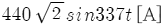
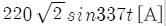
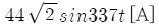
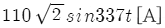
(정답률: 64%)
23. 단상회로의 전력을 측정하고자 할 때 필요하지 않은 것은?
- 저항계
- 전압계
- 전류계
- 역률계
(정답률: 42%)
24. 접지저항을 측정할 때 사용하는 측정장치는?
- 자동전압조정기
- 어스테스터
- 검류기
- 테스터
(정답률: 60%)
25. 맥동률이 가장 적은 정류방식은?
- 단상 반파식
- 단상 전파식
- 3상 반파식
- 3상 전파식
(정답률: 79%)
26. 직류분권전동기의 부하로 가장 적당한 것은?
- 환기용 송풍기
- 권상용 엘리베이터
- 전기철도 전동차
- 크레인
(정답률: 53%)
27. 용량 180Ah의 납축전지를 10시간 동안 방전시켜 사용하면 방전전류는 몇 A인가?
- 18A
- 180A
- 1800A
- 3600A
(정답률: 58%)
28. 그림과 같은 회로에서 다이오드 양단의 전압 VD는 몇 V인가? (단, 이상적인 다이오드이다.)
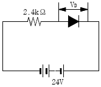
- 0
- 2.4
- 10
- 24
(정답률: 71%)
29. 그림과 같은 논리회로의 명칭은?
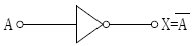
- AND
- NOT
- NOR
- NAND
(정답률: 77%)
30. 전자회로에서 온도에 의해 저장값이 변화하는 반도체로서 온도보상용, 온도계측용으로 사용되고 있는 소자는?
- 저항
- 리액터
- 콘덴서
- 서미스터
(정답률: 85%)
31. Y결선의 전원에서 각 상전압이 100V일 때 선간전압[V]은?
- 173V
- 165V
- 151V
- 143V
(정답률: 72%)
32. 상호유도계수 M을 두 코일의 자기유도계수 L1, L2로 표시하면? (단, 결합계수는 K라고 한다.)
- M=k√L1L2
- M=kL1L2
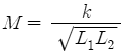
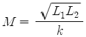
(정답률: 61%)
33. 3상 유도전동기가 약 50%의 부하로 운전하고 있던 중 한 선이 절단되면 어떻게 되겠는가?
- 즉시 정지한다.
- 이상 없이 계속 운전된다.
- 계속 운전되나 과전류가 흐른다.
- 소음이 심하게 발생하며 서서히 정지한다.
(정답률: 73%)
34. 다음 중 저항기 내 저항체의 필요한 조건이 아닌 것은?
- 고유저항이 클 것
- 저항의 온도계수가 작을 것
- 구리에 대한 열기전력이 클 것
- 내열성, 내식성이 뛰어나고 산화되지 않을 것
(정답률: 55%)
35. 200V에서 1kW의 전력을 소비하는 전열기를 100V에서 사용하면 소비전력은?
- 150W
- 250W
- 400W
- 500W
(정답률: 46%)
36. L-C 회로의 직렬공진 조건은?
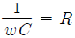
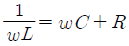
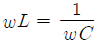
- ωL=ωC
(정답률: 80%)
37. 기계적 추치제어계로 그 제어량이 위치, 각도 등인 것은?
- 자동조정
- 정치제어
- 프로그래밍제어
- 서보기구
(정답률: 73%)
38. 그림과 같이 콘덴서 6F와 4F가 직렬로 접속된 회로에 전압 30V를 가했을 때, 6F 콘덴서 단자전압 V1은 몇 V인가?
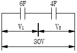
- 10V
- 12V
- 15V
- 18V
(정답률: 75%)
39. 자체 인덕턴스가 20mH인 코일에 30A의 전류가 흐른 경우 축적된 에너지는 몇 J인가?
- 6J
- 9J
- 12J
- 18J
(정답률: 57%)
40. 제어요소가 제어대상에게 주는 것은?
- 기준입력
- 동작신호
- 제어량
- 조작량
(정답률: 76%)
3과목: 소방관계법규
41. 위험물제조소에서“위험물제조소”라는 표시를 한 표지의 바탕색은?
- 청색
- 적색
- 흑색
- 백색
(정답률: 60%)
42. 소방시설의 종류 중 경보설비가 아닌 것은?
- 단독경보형 감지기
- 자동화재탐지설비
- 비상콘센트설비
- 통합감시시설
(정답률: 82%)
43. 저장소 또는 제조소 등이 아닌 장소에서 지정수량 이상의 위험물을 저장 또는 취급한 자에 대한 벌칙은?(관련 규정 개정전 문제로 임의로 1번을 누르면 누르면 정답 처리됩니다. 자세한 내용은 해설을 참고하세요.)
- 1년 이하 징역 또는 1천만 원 이하의 벌금
- 2년 이하 징역 또는 1천만 원 이하의 벌금
- 1년 이하 징역 또는 2천만 원 이하의 벌금
- 2년 이하 징역 또는 2천만 원 이하의 벌금
(정답률: 77%)
44. 제1종 판매취급소의 위험물을 배합하는 실의 기준으로 옳은 것은?
- 바닥면적은 5m2 이상 10m2 이하로 할 것
- 출입구 문턱의 높이는 바닥면으로부터 0.1m 이상으로 할 것
- 바닥은 위험물이 침투하지 아니하는 구조로 하고 경사가 없는 집유설비를 할 것
- 내부에 체류한 가연성의 증기는 벽면에 있는 창문으로 방출하는 구조로 할 것
(정답률: 48%)
45. 소방기본법에 따른 화재조사전담부서의 장이 관장하는 업무가 아닌 것은?
- 화재조사 인력의 수급 및 배치계획
- 화재조사의 총괄ㆍ조정
- 화재조사를 위한 장비의 관리운영에 관한사항
- 화재조사의 실시
(정답률: 49%)
46. 소방시설관리사의 결격사유가 아닌 것은?
- 피성년후견인
- 금고 이상의 실형을 선고 받고 그 집행이 면제된 날부터 2년이 지나지 아니한 사람
- 행정안전부령에 따라 자격이 취소된 날로부터 2년이 지나지 아니한 사람
- 금고 이상의 형의 집행유예를 선고받고 그 유예기간이 지난 사람
(정답률: 75%)
47. 소방시설공사업법에 규정된 소방시설업에 속하지 않는 것은?
- 소방시설관리업
- 소방시설설계업
- 소방시설공사업
- 소방공사감리업
(정답률: 72%)
48. 소방용수시설 중 급수탑의 개폐밸브는 지상에서 몇 m 이상 몇 m 이하의 위치에 설치하도록 하여야 하는가?
- 0.8m 이상 1.0m 이하
- 0.8m 이상 1.5m 이하
- 1.0m 이상 1.5m 이하
- 1.5m 이상 1.7m 이하
(정답률: 70%)
49. 이동식 난로를 설치할 수 없는 장소로 소방 법령상 규정되어 있는 곳이 아닌 것은?
- 학원
- 종합병원
- 역ㆍ터미널
- 고층아파트
(정답률: 67%)
50. 소방시설공사의 하자보수기간으로 옳은 것은?
- 유도등 : 1년
- 주거용 주방자동소화장치 : 3년
- 자동화재탐지설비 : 2년
- 상수도소화용수설비 : 2년
(정답률: 66%)
51. 시ㆍ도지사가 소방시설업 등록을 위해서 제출된 서류를 심사한 결과 첨부서류가 미비 되었을 때 보완을 요청할 수 있는 기간은?
- 7일 이내
- 10일 이내
- 14일 이내
- 30일 이내
(정답률: 46%)
52. 운송책임자의 감독 또는 지원을 받아 이를 운송하여야 하는 위험물을 나열한 것은?
- 칼륨, 나트륨
- 알킬알루미늄, 알킬리튬
- 알칼리금속, 알칼리토금속
- 유기금속화합물
(정답률: 68%)
53. 객석유도등을 설치해야 하는 소방대상물이 아닌 것은?
- 사무공간 및 업무시설
- 문화 및 집회시설
- 운동시설
- 종교시설
(정답률: 74%)
54. 특정소방대상물의 소방시설은 정기적으로 자체점검을 하거나 관리업자 또는 기술자격자로 하여금 점검을 받아야 한다. 관계인 등이 점검을 한 경우 그 점검 결과를 누구에게 보고하여야 하는가?
- 소방본부장 또는 소방서장
- 시ㆍ도지사
- 한국소방안전원장
- 소방청장
(정답률: 74%)
55. 소방공무원이 화재를 진압하거나 인명구조활동을 위하여 설치ㆍ사용하는 소방설비를 무엇이라 하는가?
- 소화용수설비
- 경보설비
- 소화활동설비
- 피난설비
(정답률: 83%)
56. 전문 소방시설설계업의 등록기준에서 기술인력의 최소 인원수로 옳은 것은?
- 소방기술사 1명, 소방설비기사 3명 이상
- 소방기술사 2명, 보조기술인력 2명 이상
- 소방기술사 1명, 보조기술인력 1명 이상
- 소방기술사 2명, 보조기술인력 3명 이상
(정답률: 67%)
57. 다음 특정소방대상물 중 의료시설과 관련 없는 업종은?
- 요양병원
- 마약진료소
- 한방병원
- 노인의료복지시설
(정답률: 55%)
58. 비상방송설비를 설치하여야 하는 특정소방대상물에 이를 면제해 주는 기준에 해당되는 것은?
- 단독경보형 감지기를 2개 이상의 단독경보형 감지기와 연동하여 설치한 경우
- 아크경보기 또는 전기관련법령에 의한 지락차단장치를 화재안전기준에 적합하게 설치한 경우
- 비상경보설비와 같은 수준 이상의 음향을 발하는 장치를 부설한 방송설비를 화재안전기준에 적합하게 설치한 경우
- 피난구 유도등 또는 통로유도등을 화재안전기준에 적합하게 설치한 경우
(정답률: 68%)
59. 소방용 기계ㆍ기구의 형식승인을 취소하여야만 하는 경우로서 가장 옳은 것은?
- 제품검사시 형식승인 및 제품검사의 기술기준에 미달되는 경우
- 거짓이나 그 밖의 부정한 방법으로 형식승인을 얻은 경우
- 형식승인을 위한 시험시설의 시설기준에 미달되는 경우
- 형식승인을 받지 아니한 소방용 기계ㆍ기구를 판매한 경우
(정답률: 75%)
60. 위험물안전관리자가 퇴직한 때에는 퇴직한 날부터 며칠 이내에 다시 위험물안전관리자를 선임하여야 하는가?
- 7일 이내
- 15일 이내
- 30일 이내
- 45일 이내
(정답률: 81%)
4과목: 소방전기시설의 구조 및 원리
61. 피난기구의 위치를 표시하는 축광표지는 주위조도 0lx에서 60분간 발광 후 직선거리 몇 m 떨어진 위치에서 위치표지를 식별할수 있는 것으로 하여야 하는가?
- 3m
- 10m
- 20m
- 30m
(정답률: 67%)
62. 누전경보기의 전원전압 정류회로에서 병렬로 연결되는 콘덴서의 용도로서 가장 적합한 것은?
- 직류전압을 평활하게 하기 위한 것이다.
- 직류전압의 온도보정용이다.
- 교류전압을 저지하기 위한 것이다.
- 정류기의 절연저항을 증가시키기 위한 것이다.
(정답률: 65%)
63. 비상방송설비의 확성기 음성입력기준으로 옳은 것은?
- 1W 이상(실내 0.5W 이상)일 것
- 3W 이상(실내 1W 이상)일 것
- 5W 이상(실내 3W 이상)일 것
- 7W 이상(실내 5W 이상)일 것
(정답률: 88%)
64. 소방관계법에 의한 비상경보설비의 설치대상이 아닌 특정소방대상물은?
- 지하층을 제외한 층수가 5층 이상인 소방대상물
- 50인 이상의 근로자가 작업하는 옥내작업장
- 바닥면적 150m2 이상인 지하층ㆍ무창층의 소방대상물
- 터널로서 길이가 500m 이상인 지하가
(정답률: 50%)
65. 비상콘센트설비의 전원회로의 설치기준을 설명한 것 중 ( )에 알맞은 내용은?
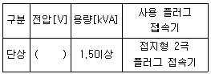
- 110
- 220
- 380
- 440
(정답률: 88%)
66. 자동화재탐지설비의 발신기 설치기준에 대한 설명으로 틀린 것은?
- 복도 또는 별도로 구획된 실로서 보행거리가 40m 이상일 경우에는 발신기를 추가로 설치하여야 한다.
- 조작스위치는 바닥으로부터 0.8m 이상 1.5m 이하의 높이에 설치하여야 한다.
- 특정소방대상물의 각 부분으로부터 하나의 발신기까지의 수평거리가 30m 이하가 되도록 하여야 한다.
- 위치표시등의 불빛은 부착면으로부터 15° 이상의 범위 안에서 부착지점으로부터 10m 이내의 어느 곳에서도 식별이 가능할 수 있는 적색등으로 하여야 한다.
(정답률: 75%)
67. 화재감지기 회로를 교차회로방식으로 하는 목적은?
- 전압강하의 감소
- 전선의 절약
- 저항의 감소
- 오동작 방지
(정답률: 75%)
68. 비상점등 시 피난구유도등의 표시면의 평균휘도는 몇 [cd/m2] 이상 이어야 하는가?(관련 규정 개정전 문제로 임의로 1번을 누르면 누르면 정답 처리됩니다. 자세한 내용은 해설을 참고하세요.)
- 100[cd/m2]
- 150[cd/m2]
- 2000[cd/m2]
- 3000[cd/m2]
(정답률: 78%)
69. 무선통신보조설비 증폭기의 전면에는 주 회로의 전원이 정상인지의 여부를 표시할 수 있는 전압계 및 무엇을 설치하여야 하는가?
- 표시등
- 전류계
- 역률계
- 전력계
(정답률: 78%)
70. 비상조명등은 비상점등을 위하여 비상전원으로 전환되는 경우 비상점등회로로 정격전류의 1.2배 이상의 전류가 흐르거나 램프가 없는 경우에는 몇 초 이내에 예비전원으로부터의 비상전원 공급을 차단하여야 하는가?
- 2초
- 3초
- 5초
- 10초
(정답률: 64%)
71. 비상방송설비의 음량조정기를 설치하는 경우 음량조정기의 배선방식으로 옳은 것은?
- 2선식
- 3선식
- 4선식
- 1선식
(정답률: 87%)
72. 부식성 가스가 발생할 우려가 있는 장소인 축전지실에 적응성이 없는 감지기는?
- 차동식 스포트형 1종
- 정온식 특종(내산형)
- 보상식 스포트형 1종(내산형)
- 불꽃감지기
(정답률: 45%)
73. 연기감지기 설치기준에 대한 설명으로 옳은 것은?
- 감지기는 복도 및 통로에 있어서는 보행거리 20m(3종에 있어서는 15m)마다 1개 이상을 설치할 것
- 천장 또는 반자가 낮은 실내 또는 좁은 실내에 있어서는 출입구에서 먼 부분에 설치할 것
- 감지기는 벽 또는 보로부터 1m 이상 떨어진 곳에 설치할 것
- 계단 및 경사로에 있어서는 수직거리 15m(3종에 있어서는 10m)마다 1개 이상을 설치할 것
(정답률: 42%)
74. P형 수신기의 기능과 가스누설경보기의 수신부 기능을 겸한 수신기는?
- GP형 수신기
- GR형 수신기
- R형 수신기
- P형 복합식 수신기
(정답률: 70%)
75. 자동화재탐지설비의 감지기에 관한 내용 중 틀린 것은?
- 정온식 감지기는 주방ㆍ보일러실 등으로서 다량의 화기를 취급하는 장소에 설치하되, 공칭작동온도가 최고주위온도보다 20℃ 이상 높은 것으로 설치할 것
- 보상식 스포트형 감지기는 정온점이 감지기 주위의 평상시 최고온도보다 20℃ 이상 높은 것으로 설치할 것
- 감지기(차동식 분포형은 제외)는 실내로의 공기유입구로부터 1.5m 이상 떨어진 위치에 설치할 것
- 감지기는 천장 또는 반자의 옥내에 면하지 않은 부분에 설치할 것
(정답률: 48%)
76. 누전경보기의 구조 및 기능시험에서 정격전압이 몇 V를 넘는 기구의 금속제 외함에는 접지단자를 설치하여야 하는가?
- 30V
- 50V
- 60V
- 100V
(정답률: 64%)
77. 누전경보기의 전원은 분전반으로부터 전용회로로 하고, 각 극에 개폐기 또는 몇 A 이하의 과전류차단기를 설치하여야 하는가?
- 10A
- 15A
- 20A
- 25A
(정답률: 83%)
78. 다음 중 무선통신보조설비 구성부품으로 틀린 것은?
- 분배기
- 분파기
- 혼합기
- 정류기
(정답률: 82%)
79. 화재안전기준에 의한 용어의 정의로서 옳지 않은 것은?(오류 신고가 접수된 문제입니다. 반드시 정답과 해설을 확인하시기 바랍니다.)
- 교류 440V는 저압이다.
- 직류 740V는 저압이다.
- 교류 620V는 저압이다.
- 교류 6600V는 고압이다.
(정답률: 66%)
80. 유도등의 전원에 대한 기준으로 옳지 않은 것은?
- 유도등의 전원은 축전지, 전기저장장치 또는 교류전압의 옥내간선으로 하고 전원까지의 배선은 전용으로 하여야 한다.
- 비상전원은 축전지로 하여야 한다.
- 지하층으로서 용도가 지하상가인 경우 비상전원의 용량은 피난층에 이르는 부분의 유도등을 30분 이상 유효하게 작동시킬 수 있는 용량이어야 한다.
- 지하층을 제외한 층수가 8층인 경우 비상전원의 용량은 유도등을 20분 이상 유효하게 작동시킬 수 있는 용량이어야 한다.
(정답률: 61%)